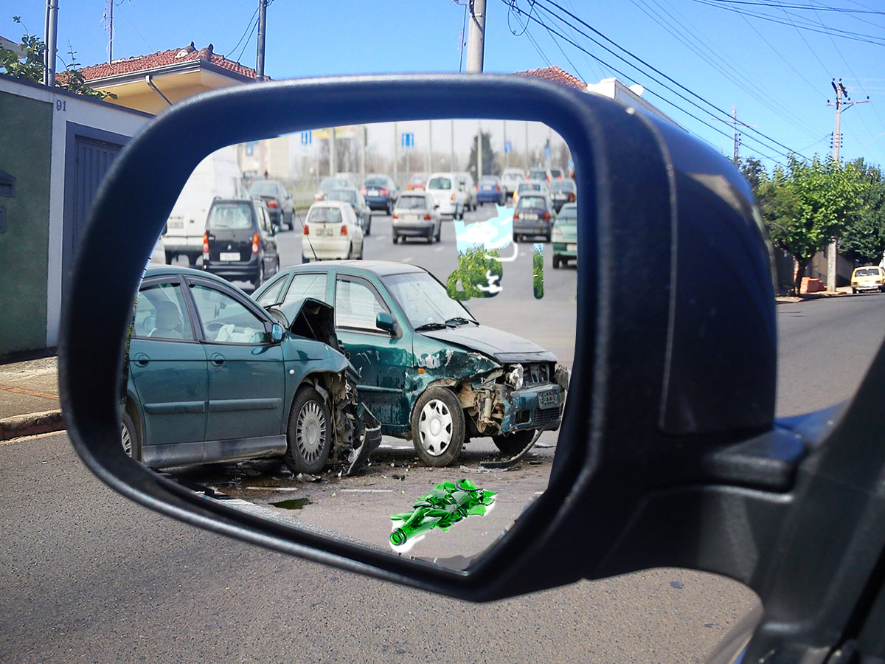

Each 51 minutes in the United States, someone is kill by a drunk driver. Which mean that 27 people die per day.
Someone is affect in a drunk driving accindent every 2 minutes.
In the year 2011, 9,878 inocent people were victims of dunk drivers.
In 2010, of the fatalities among children ages 14 and younger, 17 percent happened in alcohol impaired-driving crashes.
In most states, the law prohibits driving for all adults with a Blood Alcohol Content (BAC) of .08% or higher.
On an average weekend, a car-crash is responsible for the death of one teen every hour. In over 45% of those crashes, alcohol is involved. Overall, motor vehicle crashes cause the deaths of over 35% of people aged 16-20. Of that percentage, it is estimated that 36.1% are due to alcohol involvement. Every year, more than 28,000 people lose their lives due to alcohol or drug related crashes.

Young Drivers
Drivers younger than 26 years old cause more auto fatalities in the United States, regardless of alcohol consumption. But 21 percent of young drivers involved in a fatal accident have some alcohol in their system.
A few drinks are enough to make it unsafe to drive.
This drink drive TV ad tells us the story of a father whose daughter is killed when her boyfriend drives a car into the back of a truck.
The boyfriend was drinking at a birthday before driving.
Transport Accident Commission Victoria Published on Dec 2, 2009